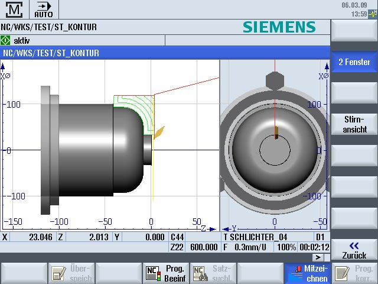

2-Fensteransicht
Das momentan aktive Fenster ist heller hinterlegt als die übrigen Ansichtsfenster.
Mit der Taste <Next Window> schalten Sie das aktive Fenster um.
Hier können Sie die Werkstückdarstellung verändern, z.B. vergrößern und verkleinern, drehen und verschieben.
Einige Aktionen, die Sie im aktiven Fenster vornehmen, wirken sich gleichzeitig auf andere Ansichtsfenster aus.
Eilgang = rot
Vorschub = grün